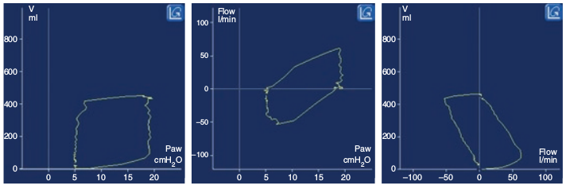

لوپ عبارت است از نمایش گرافیک تغییرات دو متغییر غیر از زمان مانند فشار، شدت جریان و حجم نسبت به یکدیگر. هر لوپ نمایش دهنده مقادیر برای یک تنفس واحد است.

در مقایسه با منحنی، لوپ نشان دهنده کدام مورد زیر است؟
۱ – تعامل بین متغییر ها
۲ – اطلاعاتی مشابه منحنی ها
۳ – بیشتر در مورد شدت جریان
۴ – بیشتر در مورد شدت زمان
۵ – جنبههای مخفی ونتیلاسیون مکانیکی